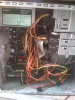
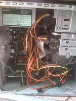

The Server is Alive
Posted April 14 2008 1:18PM by Michael
 As many of you may know, my server project commenced this weekend. Though I was overly engrossed in the process (meaning I forgot to take step by step pictures), I do have some pictures of my component boxes.
As many of you may know, my server project commenced this weekend. Though I was overly engrossed in the process (meaning I forgot to take step by step pictures), I do have some pictures of my component boxes.
Currently, the only thing set up is file sharing (currently not working), remote desktop (currently not working), and print server (possibly working but untested). The remote desktop is crucial, since I do not want to use the low quality keyboard and mouse more than I need too. I also must figure out how to set the server to a static port. To sum up this section, I need to summon Michael Pysson and his world of expertise.
 I didn't have too much trouble putting it all together. I was baffled by the fact that the hard drive bay called for me to put one hard drive in upside down, but after some tinkering I realized this was going to force me to twist an IDE cable upside down, so I broke protocol and put it in normal. Outside of that, this was a very easy install.
I didn't have too much trouble putting it all together. I was baffled by the fact that the hard drive bay called for me to put one hard drive in upside down, but after some tinkering I realized this was going to force me to twist an IDE cable upside down, so I broke protocol and put it in normal. Outside of that, this was a very easy install.
During installation, I encountered a GRUB error 17, which my research told me had to do with it not being able to read my partitions. Since I stole an older 250GB IDE hard drive from a different computer, I decided to remove it from the server, put it in an external case, and reformat it, which seemed to work.
 It only took me two tries to install Windows Server 2008, and now I am up and running as the administrator. I eagerly anticipate CITES releasing this software for free before I graduate, otherwise this experiment might end after the 240 days of free trial is over.
It only took me two tries to install Windows Server 2008, and now I am up and running as the administrator. I eagerly anticipate CITES releasing this software for free before I graduate, otherwise this experiment might end after the 240 days of free trial is over.
The total price of all of this comes to about $600 (obviously 2/3 of this total is the hard drives). Everything was purchased at Fry's in Downers Grove, IL over a span of 3 trips. I actually had the option of choosing a case fan that had LED's in the fan blades (or something of the sort), but had to pass for the sake of not wanting my room lit up at night.
For those interested, here is a complete list of components:
- ECS GeForce6100PM-M2 Motherboard : $70 - $40 Instant = $30
- AMD Athlon 64 X2 4200+ Brisbane CPU : $60 - $30 Instant = $30
- 2x1GB Crucial DDR2 PC5300 Memory : $40 - $25 Rebate = $15
- Antec Earthwatts 380W Power Supply : $60 - $30 Rebate = $30
- Cooler Master Elite 340 Case : $35
- Thermaltake TR2-R1 Heatsink : $15
- Seagate 1TB Sata Hard Drive : $250 - $50 Instant = $200
- Seagate 1TB Sata Hard Drive : $250 - $50 Instant = $200
- Old Seagate 250GB IDE Hard Drive : FREE
- Antec TriCool 120mm Case Fan : $12
- TrendNET Gigabit PCI Card : $10
- Old Hauppauge PVR-150 PCI Card : FREE
- Pioner DVR-1810 DVD-RW/CD-RW IDE Drive : $45 - $20 Rebate = $25
 
